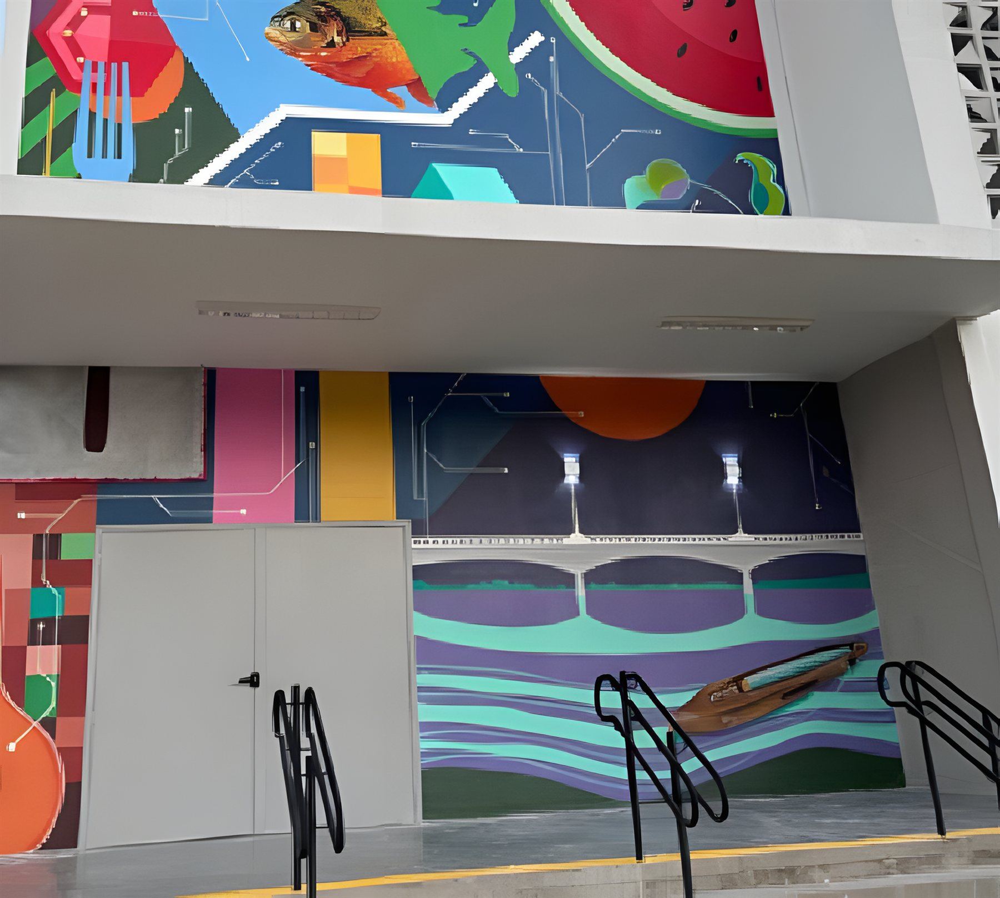

IERNs: Institutos Estaduais
Institutos Estaduais de Educação Profissional, Tecnologia e Inovação, criados pela Política Estadual de EPT (2022). Unem ensino, pesquisa, extensão e inovação, conectados ao território. Ficam em Natal, Tangará, Jardim de Piranhas, Alexandria e Campo Grande.
5institutos